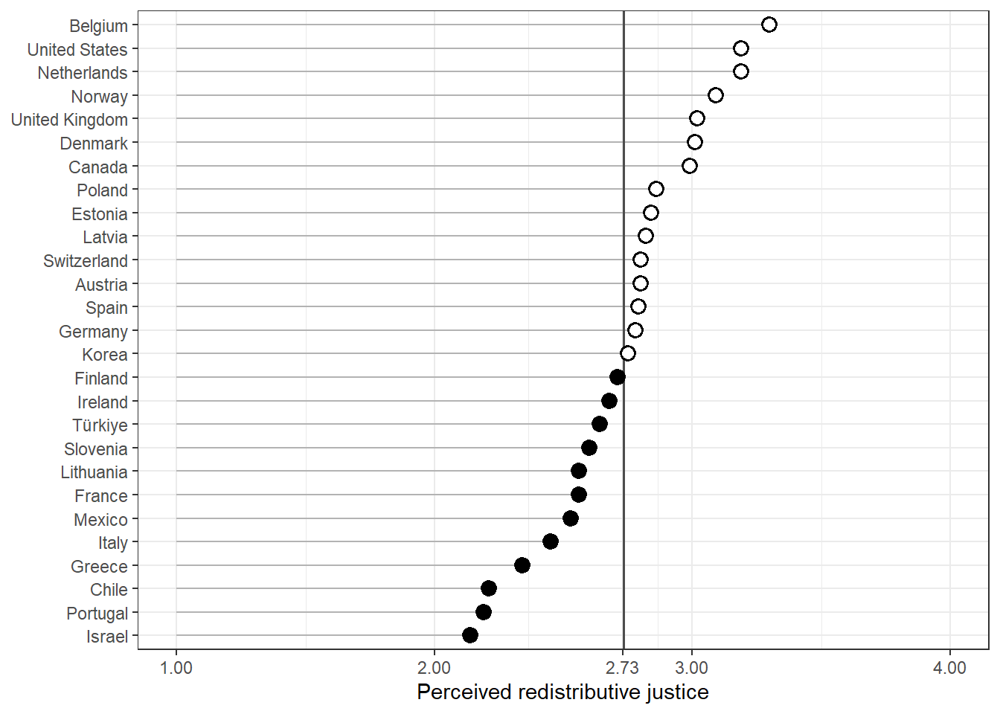

Introduction
Contemporary technological transformations, such as automation, artificial intelligence, algorithmic management and intermediation through digital platforms, are altering the conditions under which workers relate to social protection systems [@frey_future_2017; @vallas_what_2020]. What is sometimes termed the fourth industrial revolution changes the content of tasks and the stability of employment, the subjective experience that workers have of their position in the labour market and, with it, their assessment of the fairness of their relationship with the welfare state [@busemeyer_social_2022; @gallego_automation_2022]. These systems were built on the premise of stable, full-time and long-term employment, in which contributions flowed predictably from wages and rights accumulated over continuous careers [@esping-andersen_three_1993; @korpi_paradox_1998]. The progressive decoupling between that model and the actual forms of work, mainly through temporary contracts, self-employment and platform-mediated work, raises the question of how citizens today perceive the fairness of the exchange they maintain with the institutions that ought to protect them.
Research on attitudes towards the welfare state has examined extensively the determinants of support for redistribution, showing that exposure to labour market risk and to automation tends to increase the demand for social protection (Rehm, 2009; Thewissen & Rueda, 2019; @busemeyer_social_2022). Much less attention has been paid, by contrast, to perceived redistributive justice, that is, to the evaluative judgement of whether the benefits that an individual receives from the state constitute fair compensation for the taxes and contributions they pay (Roosma, van Oorschot & Gelissen, 2016). This study addresses whether perceiving the functioning of the state as fair is related to labour market position and the perception of technological risk. Drawing on data from the Risks That Matter survey of the OECD (2024), which covers more than 40,000 people in 27 countries, this research simultaneously introduces three little-explored elements. First, it distinguishes labour market position according to type of employment —formal employees, self-employed workers and platform workers—, forms that maintain unequal links with the social protection system and that have rarely been examined together in relation to perceived redistributive justice. Second, it incorporates the perception of technological risk as a source of redistributive dissatisfaction distinct from type of employment and from conventional job insecurity, distinguishing its threatening dimension —the likelihood of being displaced by automation, artificial intelligence, platform competition or the obsolescence of one’s own skills— from its enabling dimension —the perception that technology can improve working conditions—. Third, it incorporates the perceived deservingness of others —the judgement of whether others receive benefits from the state that they do not deserve— as a predictor of the assessment that each individual makes of their own relationship with the system (van Oorschot, 2000, 2006). The study makes three contributions. First, it extends the sociology of welfare attitudes by situating the structural conditions of the labour market as explanatory variables of perceived redistributive justice, linking subjective assessments with the organisation of work (Kalleberg, 2011; Emmenegger et al., 2012). Second, it provides comparative evidence on the effect of the perception of technological risk in an attitudinal domain distinct from the one that recent literature has concentrated on, concerned above all with support for redistribution or for social investment (Thewissen & Rueda, 2019; @busemeyer_social_2022). Third, it places these processes within a comparative framework of welfare regimes, which makes it possible to assess how different institutional contexts moderate the relationship between labour market vulnerability, technological perception and judgements of fairness (@esping-andersen_three_1993; Larsen, 2008). The argument organising this work is that the perception of fairness in the relationship between what one contributes and what one receives is not solely a function of ideological predispositions or of abstract beliefs about inequality, but is anchored in the everyday experience of workers in the labour market, that is, the employment relationship through which they are linked to the protection system, how secure they feel in their jobs, whether they perceive technology as a threat or as an opportunity, and how they judge the deservingness of those who also receive from the state. Although the welfare state was designed for a world of stable employment, its perceived legitimacy is called into question by labour markets that increasingly depart from that foundational assumption (Standing, 2011; Howcroft et al., 2025).
Redistributive justice as reciprocity
Research on attitudes towards the welfare state and inequality has distinguished between preferences -normative beliefs about how resources should be distributed- and perceptions -evaluative judgements about how the system actually works- (Osberg & Smeeding, 2006; McCall, 2013; Castillo et al, 2022). While the former have received greater attention as part of ideological orientation and self-interest, the latter have emerged as an object of study with distinct dynamics and consequences (Svallfors, 2013; Roosma, van Oorschot & Gelissen, 2016). Perceived redistributive justice captures whether individuals consider fair the exchange they maintain with the welfare state when paying taxes and contributions in return for access to services and transfers. Its theoretical foundation lies in the logic of reciprocity, the principle according to which the legitimacy of the system rests not only on its redistributive outcomes, but on the perceived fairness of the institutions that allocate contributions and benefits (Rothstein, 1998; Mau, 2003). When individuals feel that their contributions yield adequate returns, institutional trust is sustained; when the reciprocal logic is perceived to be broken (disproportionate contributions, insufficient benefits or a system that favours some over others), legitimacy is eroded (Cavaillé, 2023), affecting social cohesion. In recent decades, the study of redistributive attitudes has shown that, despite the sustained rise in inequality in most advanced democracies, there has been no proportional increase in the demand for redistribution (Kenworthy & McCall, 2008; Mijs, 2021; Cavaillé, 2023). Explanations of this apparent disconnect point to the perception that citizens have of inequality and of their own position in the distribution (Gimpelson & Treisman, 2018; García-Castro et al., 2020; García-Sánchez et al., 2020). Perceptions of inequality and meritocratic beliefs also interact to shape which type of distribution is considered fair (Castillo et al., 2025). Within this framework, the perceived fairness of the fiscal exchange occupies a particular place in that it does not measure how much redistribution a person wants, but rather judges whether the system treats them fairly given what they contribute.
Comparative evidence shows that these perceptions vary systematically across countries, as a function both of the institutional design of the welfare state and of macroeconomic factors such as the level of income or inequality (Blekesaune & Quadagno, 2003; Schmidt-Catran, 2016). Figure 1 presents the average of perceived redistributive justice in 27 countries and shows considerable heterogeneity, independently of welfare regime type.
Work, type of employment and platform economy
The sociology of work has documented in multiple contexts the growing polarisation between formal, well-paid employment and an expanding stratum of precarious work (Kalleberg, 2011; Gallie, 2013). The concept of precarious work, understood as uncertain and unpredictable employment that shifts risk from employers to workers, describes a condition that has spread beyond the margins of the labour market to reach growing portions of the workforce (Kalleberg, 2011). Standing’s (2011) notion of precarity adds that this condition is not reduced to income insecurity, but entails the absence of the occupational identity, social rights and temporal stability that characterised the standard employment relationship. These transformations matter for the welfare state because its institutions were designed around that formal relationship, so that those who depart from it tend to maintain a weaker and more unequal link with the protection system (Emmenegger et al., 2012; Schwander & Häusermann, 2013). This structural position in the labour market shapes that material link, and also conditions attitudes towards inequality and redistribution (Lindh & McCall, 2020), an effect especially visible in contexts of marked commodification such as the Chilean one (Pérez-Ahumada et al., 2026). Type of employment structures that relationship directly. Workers in formal waged employment contribute through registered contributions and accumulate rights in a legible way, which makes the relationship between what they contribute and what they receive traceable. Workers in non-formal employment face a more opaque and often less favourable relationship, since the self-employed tend to pay higher net contributions and remain excluded from unemployment insurance, while temporary workers accumulate interrupted contribution records that reduce their future benefits (Rueda, 2007; Marx, 2014). This institutional distance between insiders and outsiders in the labour market creates conditions for the latter to perceive that the system was not designed for people in their situation, which may translate into a less favourable assessment of the fairness of the fiscal exchange (Schwander & Häusermann, 2013). Platform-mediated work constitutes a particularly acute form of non-formal employment. Algorithmic intermediation, the classification of workers as independent contractors and the fragmentation of tasks place these workers largely outside the formal architecture of social insurance (Wood et al., 2019; Vallas & Schor, 2020). Several studies have shown that platform workers combine nominal autonomy with a high degree of external control and a fragmented or non-existent social protection (Schor, 2020; Behrendt, Nguyen & Rani, 2019), a pattern that evidence for Latin America has documented in platform-mediated delivery, where classification as independent contractors shifts risk onto workers and leaves them outside social security (Gutiérrez-Crocco & Atzeni, 2022). This structural position exposes them to a lack of protection that leads one to expect a comparatively lower perception of the fairness of their relationship with the welfare state. These considerations give rise to the first hypothesis:
Job insecurity
Beyond type of employment, the level of job insecurity experienced by workers constitutes a distinct dimension of vulnerability. Job insecurity is defined as the subjective assessment of the likelihood of losing one’s own job or self-employment income in the short term, and captures the chronic uncertainty and anticipatory anxiety associated with the possibility of job loss (Sverke, Hellgren & Näswall, 2002; De Witte, 2005). Unlike objective precarity, it is a perceived state that can also affect formally protected workers and whose effects on behaviour and attitudes are widely documented (Anderson & Pontusson, 2007; Chung & van Oorschot, 2011). From the perspective of redistributive justice, job insecurity raises what is at stake in the relationship between contributions and benefits. The literature on risk and redistribution has shown that exposure to insecurity increases support for social protection (Iversen & Soskice, 2001; Cusack, Iversen & Rehm, 2006; Rehm, 2009). The relationship with perceived fairness may, however, operate in a different direction: workers who anticipate losing their job assess with greater scrutiny what they would receive from the state in that scenario, and when that expectation is not accompanied by confidence in the protective capacity of the system, they are likely to perceive the exchange as less fair (Marx, 2014). The second hypothesis is thus proposed:
Perceived technological change
The rise of digital technologies has introduced an additional source of occupational vulnerability, distinct from conventional job insecurity. Estimates of the proportion of jobs susceptible to automation vary widely, but even the most conservative ones anticipate significant changes in the content of tasks and in the viability of numerous occupations (Frey & Osborne, 2017; Arntz, Gregory & Zierahn, 2016; Autor, 2015; Bustelo et al., 2020). What matters for welfare attitudes is not the objective magnitude of that process, but the way in which workers anticipate its effects on their own job (@gallego_automation_2022). That anticipation comprises both the perception of a displacement risk (the probability of losing the job to technology) and the perception of a benefit (the probability that technology will improve the quality of work).
Perception of technological displacement risk
On the one hand, technological change refers to the perception of technological displacement risk, that is, the probability that one’s own job will be replaced by a robot or by artificial intelligence, substituted by a provider offering a similar service through a platform, or rendered unviable by the obsolescence of one’s own digital skills. Research has shown that the fear of automation is distributed unevenly across occupations and social groups and that it has measurable political and attitudinal consequences (Dekker, Salomons & van der Waal, 2017; Im et al., 2019; Kurer, 2020). Within the framework of welfare attitudes, the literature on risk and redistribution has robustly established that perceived exposure to technological risk increases the demand for social protection and is associated with an experience of economic insecurity (Iversen & Soskice, 2001; Rehm, 2009; Thewissen & Rueda, 2019; @busemeyer_social_2022). Following that logic, workers who perceive their job as threatened by technology hold greater expectations of protection and, when contrasting these with what they actually receive, are more likely to assess their exchange with the welfare state as insufficient (Marx, 2014). The third hypothesis is thus derived:
Perception of technological benefit
On the other hand, technological change refers to the perception of technological benefit, which addresses the probability that technology will make working hours more compatible with private life, reduce the dangerousness or physical demands of work, or lessen its monotony and mental load. This enabling dimension has received much less attention than its threatening counterpart, even though workers’ orientation towards technology is not solely negative (Autor, 2015; Brougham & Haar, 2018). Unlike displacement risk, perceiving technology as an improvement in working conditions places the worker in a position of lower exposure to risk and greater optimism about their occupational trajectory. To the extent that the assessment of the exchange with the welfare state reflects the individual’s position of economic security (Rehm, 2009), this positive orientation can be expected to be associated with a more favourable perception of redistributive justice. The fourth hypothesis follows from this:
Perceived deservingness of others
Perceptions of redistributive justice do not depend solely on structural position, but also on the normative frameworks through which individuals assess who and what deserves to receive from the state. Deservingness theory holds that people direct their solidarity towards the groups they consider deserving and withdraw it from those they judge undeserving, on the basis of criteria such as control over one’s own situation, attitude, reciprocity, identity and need (van Oorschot, 2000; Petersen, 2012). In strongly commodified contexts, meritocratic and market-justice beliefs reinforce the tendency to assess the recipients of state support in terms of merit and, with it, to consider undeserving those who are perceived not to contribute enough (Castillo, et al., 2025). These judgements about the deservingness of others are analytically distinct from the judgement that each individual makes about the fairness of their own relationship with the system. The distinction is relevant, since a person may consider themselves a contributor who does not receive their fair share and, at the same time, judge that others receive benefits they do not deserve. Both assessments are, however, part of the same moral economy of welfare, and they can be expected to be connected (Mau, 2003; van Oorschot et al., 2017). The connection between the two judgements operates through the norm of reciprocity. The resources that an individual contributes appear to sustain those who do not fulfil their part, which erodes the sense that the system treats them fairly (Reeskens & van Oorschot, 2013; Cavaillé, 2023). Comparative research has shown that deservingness perceptions robustly structure support for the welfare state and that the control criterion occupies a central place in those judgements (van Oorschot, 2006; Laenen, 2020). It can therefore be expected that those who perceive greater abuse of the system by others will assess their own relationship with it as less fair. The fifth hypothesis is proposed:
Welfare regimes and institutional context
Individual perceptions of redistributive justice are formed in institutional contexts that vary systematically across welfare regimes (@esping-andersen_three_1993; Arts & Gelissen, 2002). Esping-Andersen’s (1990) classic typology distinguishes three worlds of welfare capitalism according to how they organise the relationship between state, market and family in the provision of social protection. In social democratic regimes (mainly Nordic countries), protection is comprehensive and universal, and redistribution constitutes a central expression of social solidarity sustained by universalist institutions (@korpi_paradox_1998). In liberal regimes (mainly Anglo-Saxon countries and, for example, Chile as a case of a commodified welfare state in Latin America), protection is residual and targeted, is organised around market participation and is politically more contested (Martínez Franzoni, 2008, Pérez-Ahumada, 2023). In conservative-corporatist regimes (continental Europe), rights are strongly tied to employment status, which preserves status differences and links protection to the employment trajectory (Ferrera, 1996). Alongside institutional design, macroeconomic factors such as the level of income per capita and the degree of inequality bear on welfare attitudes. The evidence suggests that income inequality is associated with perceptions of the fairness of the system, although the direction of that relationship is a matter of debate (Finseraas, 2009; Schmidt-Catran, 2016), and that the level of economic development conditions both the fiscal capacity of the state and citizens’ expectations regarding social protection (Blekesaune & Quadagno, 2003). Taken together, the perception of redistributive justice can be expected to be, on average, higher in social democratic regimes, where protection is more comprehensive and universal, than in liberal and conservative regimes (Svallfors, 1997; Jæger, 2006; Larsen, 2008). Hence the sixth hypothesis:
The institutional context not only shifts the average level of perceptions, but may moderate the effect of individual predictors. The institutional distance between workers in non-formal employment and the protection system is greater in liberal and conservative regimes than in social democratic ones, which are universalist in character (Ferrera, 1996; Schwander & Häusermann, 2013). It can therefore be expected that the negative effect of labour market position on perceived fairness will be more pronounced in the former:
An analogous expectation can be formulated for the perception of technological risk. In universalist regimes, protection against the risks associated with digitalisation is more robust and less dependent on the individual employment trajectory, which could cushion the effect of perceived displacement risk on the assessment of the fiscal exchange (@busemeyer_social_2022; @gallego_automation_2022; Fan, Ning & He, 2024):
Finally, the salience of deservingness judgements varies according to institutional design. In universalist regimes, where benefits are conceived as general rights rather than as targeted assistance, the distinctions between deserving and undeserving tend to be less pronounced than in residual regimes, organised around means testing (Larsen, 2008; van Oorschot et al., 2017). It can therefore be expected that the effect of the perceived deservingness of others on the fairness of one’s own exchange will be stronger in liberal and conservative regimes: